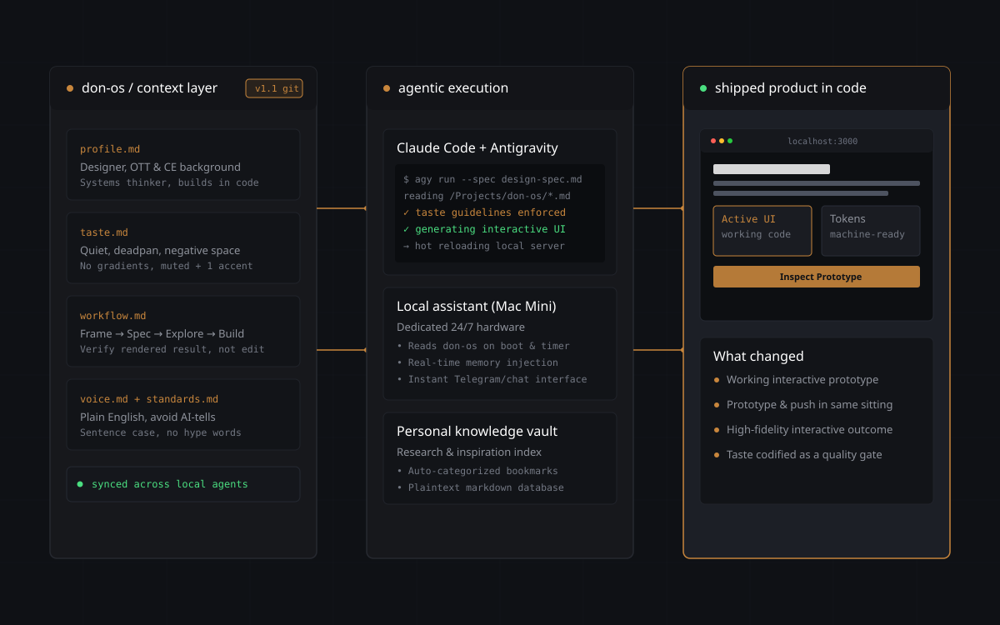

A solo practice where design decisions are tested as working software instead of static proposals.

don-os context layer, agentic execution (Claude Code, Google Antigravity), shipped interactive prototype.
System pipeline
A parallel loop pairing AI agents and canvas tools, flowing into versioned repository code.
A four-stage loop from a brief to a verified component running in the browser.
# feature-spec.md • Goal: responsive video rail • Focus: D-pad navigation, scale 1.05 • Acceptance: no layout shift on focus
# don-os/taste.md • DO: desaturated, muted + 1 accent • AVOID: purple/teal gradients, glow • AVOID: generic SaaS template look
$ agy run --spec feature-spec.md ✓ reading taste.md & standards.md ✓ generating DOM components + CSS ✓ hot-reloading at localhost:8000
# verification check • Reflow & text-wrap: pretty • Keyboard focus & visible states • Verified on desktop & mobile
Examples built and maintained using this workflow.
AI assistant running on a dedicated Mac Mini, accessible via chat, synced with don-os on boot and timer.
Lightweight system for organizing research, bookmarks, and inspiration into structured markdown files.
This entire site, designed and coded end-to-end with Claude Code and Google Antigravity.
The actual rules and constraints that steer agents before writing code.
Writing down what to avoid cuts down prompt iteration and keeps output aligned with my visual standards.
Testing running code in a browser surfaces layout edge cases and focus states right away.
Sharing working components with real tokens gives engineers a concrete reference instead of an annotated picture.